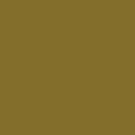

Albert beltéri falfesték Arany (2 liter)
Gyártó: Hat Szivárvány nyrt.
Felhasználás: Beltér
Mennyiség 2 liter
Egységár 2 500 Ft/liter


Gyártó: Hat Szivárvány nyrt.
Felhasználás: Beltér
Mennyiség 2 liter
Egységár 2 500 Ft/liter